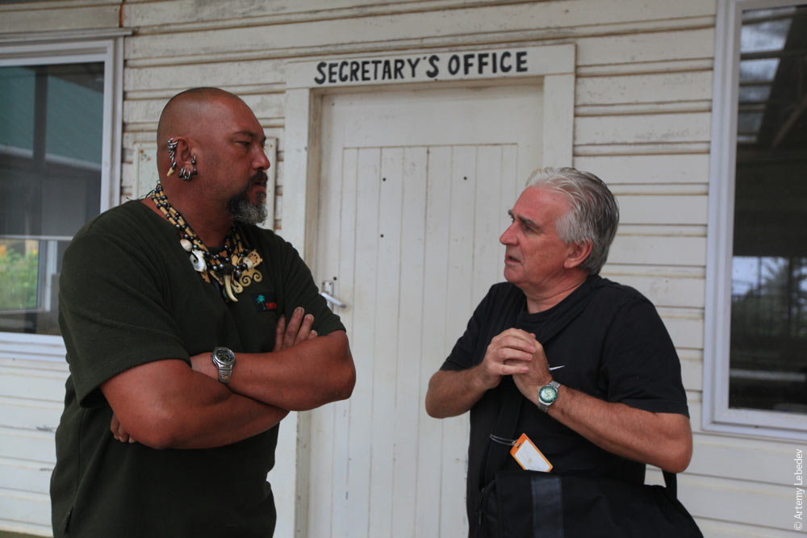
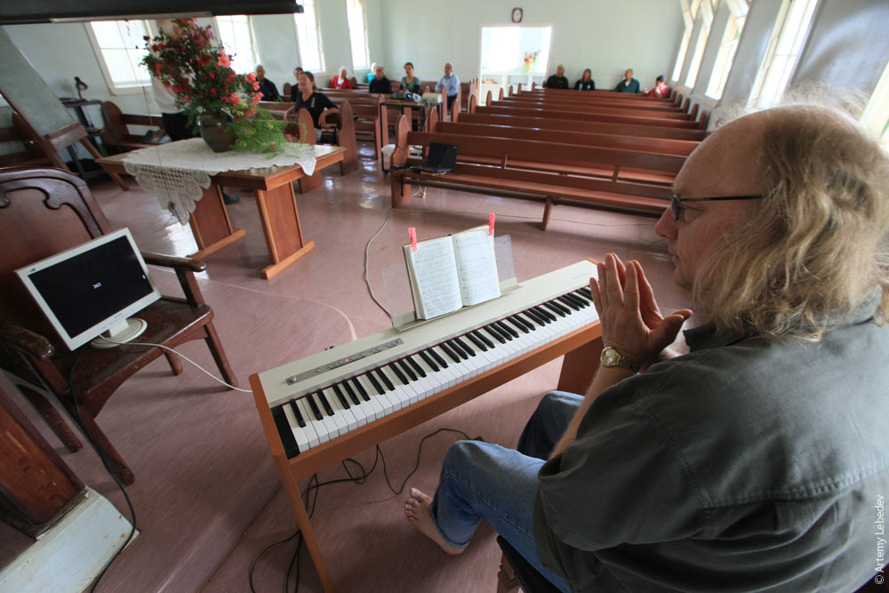
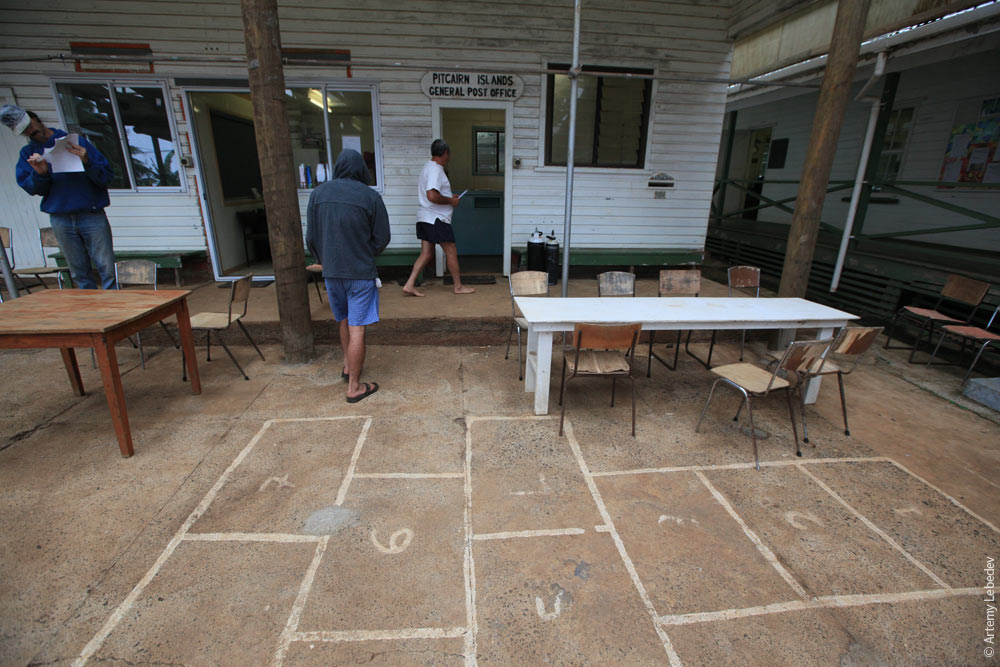
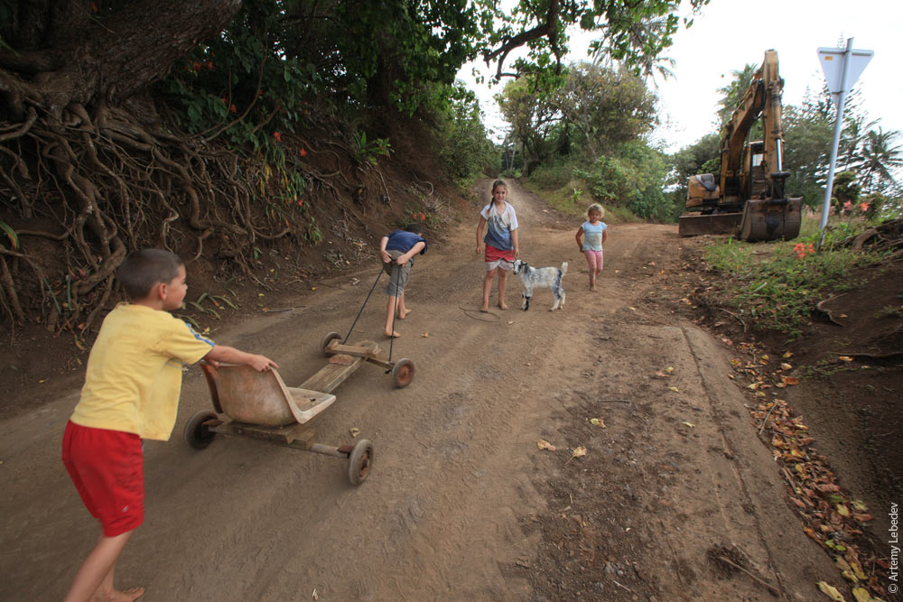
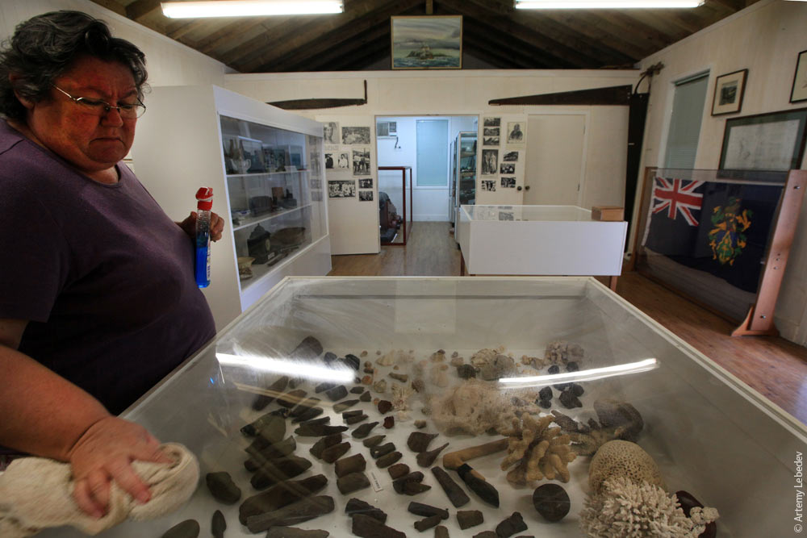
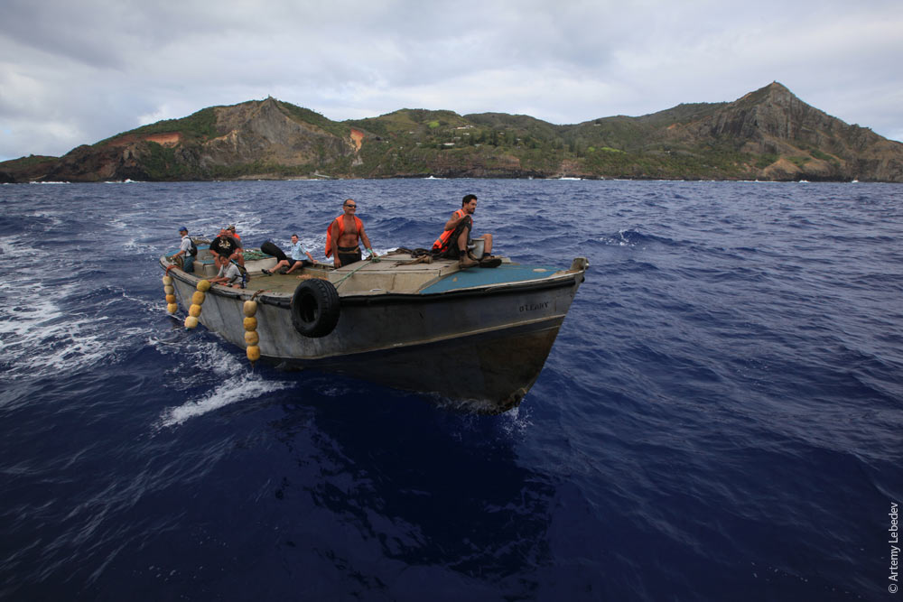
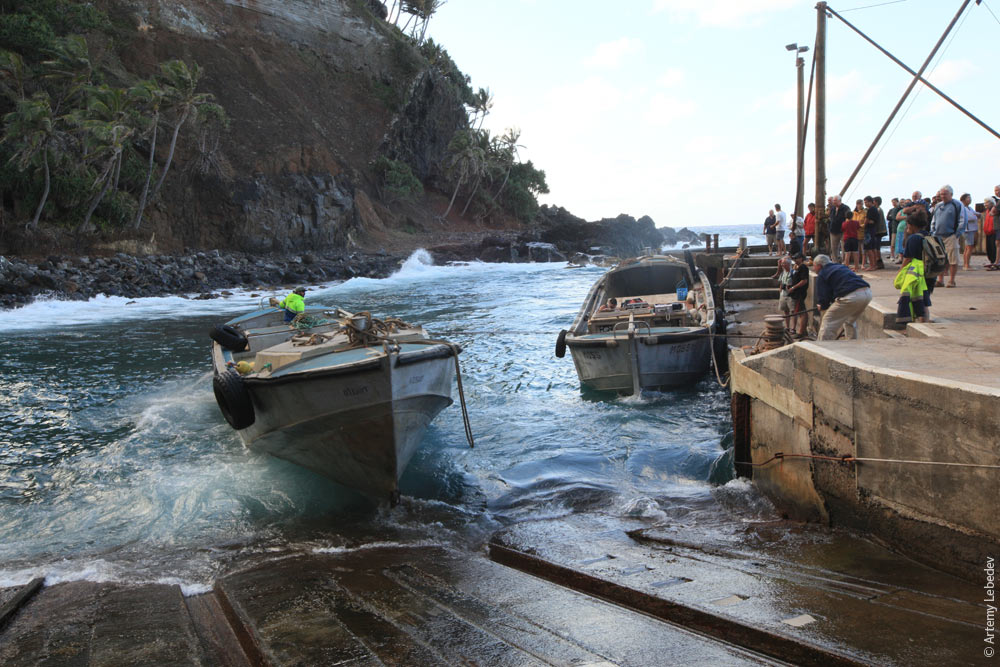

Language
Most resident Pitcairn Islanders are descendants of the Bounty mutineers and Tahitians (or other Polynesians). Pitkern is a creole language derived from 18th-century English, with elements of the Tahitian language. It is spoken as a first language by the population and is taught alongside English at the island's only school. It is closely related to the creole language Norfuk, spoken on Norfolk Island, because Norfolk was repopulated in the mid-19th century by Pitcairners.

Religion
The entire population is Seventh-day Adventist. The Seventh-Day Adventist Church is not a state religion, as no laws concerning its establishment were passed by the local government. A successful Seventh-day Adventist mission in the 1890s was important in shaping Pitcairn society. In recent years, the church has declined, and as of 2000, eight of the then forty islanders attended services regularly, but most attend church on special occasions. From Friday at sunset until Saturday at sunset, Pitcairners observe a day of rest in observance of the Sabbath, or as a mark of respect for observant Adventists. The church was built in 1954 and is run by the Church board and resident pastor, who usually serves a two-year term. The Sabbath School meets at 10 am on Saturday mornings, and is followed by Divine Service an hour later. On Tuesday evenings, there is another service in the form of a prayer meeting.
   Education
Education is free and compulsory between the ages of five and sixteen. All of Pitcairn's seven children were enrolled in school in 2000. The island's children have produced a book in Pitkern and English called Mi Bas Side orn Pitcairn or My Favourite Place on Pitcairn. The school at Pitcairn provides pre-school and primary education based on the New Zealand syllabus. The teacher is appointed by the governor from suitable qualified applicants who are New Zealand registered teachers. The contract includes the role of editor of the Pitcairn Miscellany.[citation needed] The Pitcairn Island Economic Report assumes that in around 2015–2016 there will not be any pre-school children and that the children who leave for New Zealand at age 15 for the last years of schooling are unlikely to return.
 